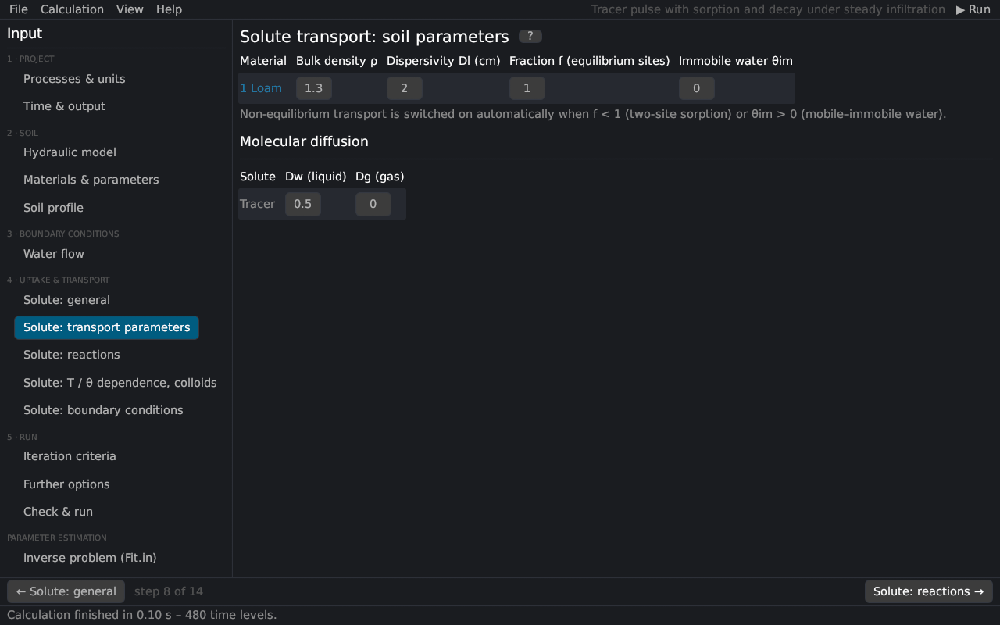

Input (pre-processing) › Solute transport
Solute transport: transport parameters
The soil-specific transport parameters (per material) and the molecular diffusion coefficients (per solute), the first part of the Solute Transport Parameters dialog of HYDRUS-1D.


Per material
| Parameter | HYDRUS | Description |
|---|---|---|
| Bulk density ρ | Bulk.d. | dry bulk density [M/L³], in the project's mass and length units (e.g. 1.5 g/cm³ with mass unit g and cm) |
| Dispersivity Dl | DisperL. | longitudinal dispersivity [L]; the dispersion coefficient is D = Dl |q|/θ + Dw τw Bear (1972) |
| Fraction f | Frac | fraction of the sorption sites in equilibrium with the liquid (two-site model) [–]; 1 = equilibrium sorption. With mobile–immobile water: fraction of sites in contact with mobile water |
| Immobile water θim | ThImob | immobile water content of the mobile–immobile model [–]; 0 = none van Genuchten and Wierenga (1976) |
| Immobile water θim (matrix) | – | dual permeability: immobile water content of the matrix domain |
Non-equilibrium transport is switched on automatically when f < 1 (two-site sorption) or θim > 0 (mobile–immobile water) (non-equilibrium transport).
Typical dispersivities are a few millimetres to centimetres in laboratory columns and about one tenth of the travel distance in the field.
Molecular diffusion
| Parameter | Description |
|---|---|
| Dw | diffusion coefficient in free water [L²/T] (small ions about 1–2 cm²/d) |
| Dg | diffusion coefficient in the soil air [L²/T] (volatile solutes, about 10⁴ times Dw) |
With the tortuosity factor (general) the effective diffusion is θ Dw τw in the liquid and av Dg τg in the gas phase.
Literature cited in this topic
- Bear, J. (1972). Dynamics of Fluids in Porous Media. Elsevier, New York, 764 pp.
- van Genuchten, M. Th., and P. J. Wierenga (1976). Mass transfer studies in sorbing porous media I. Analytical solutions. Soil Science Society of America Journal 40(4): 473–480. doi:10.2136/sssaj1976.03615995004000040011x
All sources: References.